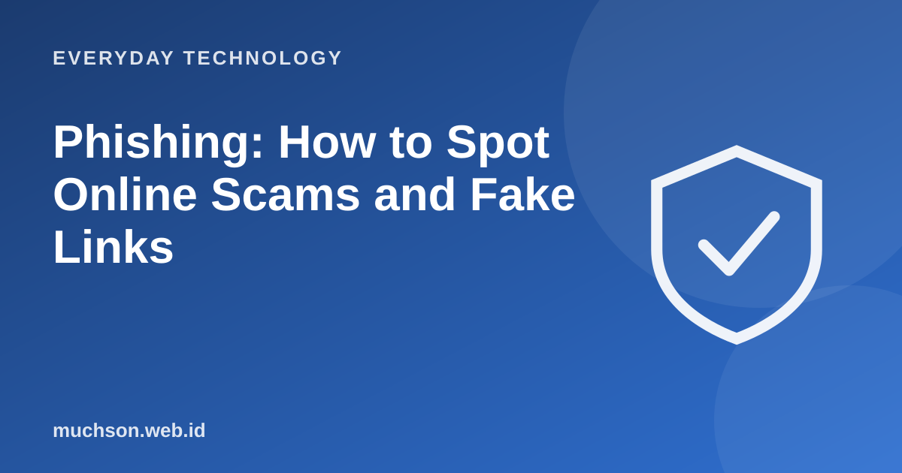

Home › Articles › Everyday Technology
Everyday TechnologyPhishing: How to Spot Online Scams and Fake Links
Phishing is an attempt to trick you into handing over passwords, OTP codes or money by posing as a trusted party. The methods keep evolving, but the basic pattern is the same: create panic or temptation, then steer you to a dangerous link or action.

Eight signs to look for
- Urgency. "Your account will be blocked in 1 hour", "confirm immediately".
- An offer that is too good. Prizes, lotteries or free money for something you never entered.
- A strange link address. A look-alike domain with different letters, or a link shortener.
- A mismatched sender. The name looks official, but the email address or number is different.
- Asks for secret data. Passwords, PINs, OTP codes or card details. Genuine parties do not ask for them.
- Odd files. Attachments or apps with extensions such as .apk from unofficial sources.
- Odd language. Many mistakes, or an unusual tone from an institution.
- Tells you to keep it secret. "Do not tell anyone" is a warning sign.
Text description of the diagram
- The bait: an attractive or frightening message
- A fake link: looks like the real thing
- You enter data: password or OTP
- Account taken over: or money drained
Test your skills
If you already clicked or entered data
The golden rule
No genuine organisation asks for your password, PIN or OTP by message or phone. If someone does, it is a scam.
FAQ
What are smishing and vishing?
Smishing is phishing by SMS or messaging, vishing is by phone call. The pattern is the same as email phishing.
How can I be sure a link is safe?
Do not click it. Type the official address of the site yourself in the browser, or open it through the official app.
Does the HTTPS padlock mean a site is safe?
No. The padlock only shows the connection is encrypted. Scam sites can use it too.